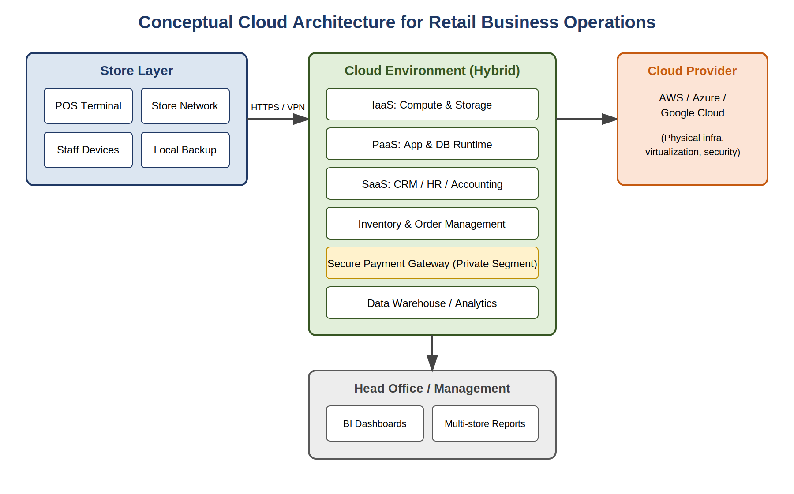

A research study on cloud adoption in retail operations — benefits, challenges, security, and a practical implementation framework, with reference to point-of-sale and inventory systems.
Drawn directly from the project brief, each objective is addressed through a combination of literature review, practitioner interviews, and structured systems analysis.
What cloud computing actually delivers — and costs — for business institutions adopting it.
How cloud adoption changes efficiency and effectiveness in retail operations specifically.
The data protection and compliance concerns that come with moving business systems to the cloud.
A practical, evidence-based framework for organizations beginning their own cloud migration.
Store-level POS systems connect to a hybrid cloud environment that separates general business services from a tightly governed payment-processing segment. Full UML diagrams, ER model, and database schema are in Chapter 4 of the report.

Figure 3.1 (from the project report) — Conceptual Cloud Architecture for Retail Business Operations.
Section 5.5 of the report describes two pieces of conceptual logic underpinning the proposed system. Below, that pseudocode is made runnable so you can test it with your own inputs.
Three structured interviews with practicing IT professionals, triangulated against two retail case studies (Chapter 7 of the report).
"Cloud-hosted POS cut downtime during peak sales, but staff needed structured retraining."
"18-month phased migration — security & IAM planning took longer than expected."
"Cost overruns without centralized governance — tagging and budget alerts are essential."
| Dimension | On-Premises (Existing) | Cloud-Based (Proposed) |
|---|---|---|
| Scalability during peak demand | Manual, slow (weeks) | Elastic, automated (minutes) |
| Downtime during peak periods | Higher risk | Reduced (per case study) |
| Software rollout across stores | On-site visits required | Centralized, simultaneous |
| Cross-store inventory visibility | Limited, delayed | Real-time |
The complete 58-page report, final presentation deck, and project execution evidence, as submitted on the Qollabb platform.